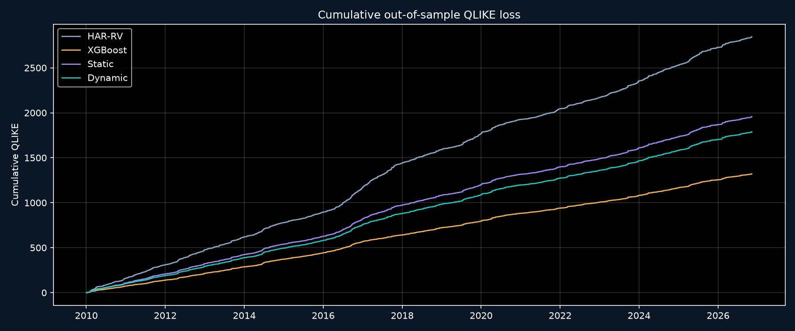
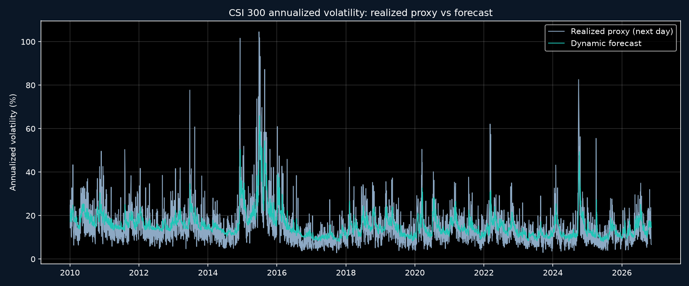
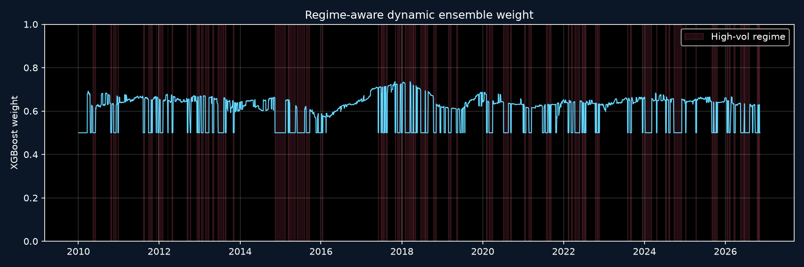

下一交易日动态波动率
13.47%
年化口径
严格滚动样本外 · HAR-RV / XGBoost · 市场状态识别 · 统计检验
所有指标由 2010-01-04 至 2026-11-09 的逐日样本外预测计算。
| 模型 | 样本数 | MAE | RMSE | QLIKE | R² OOS |
|---|---|---|---|---|---|
| HAR-RV | 4090 | 8.306e-05 | 1.814e-04 | 0.69545 | 0.4120 |
| XGBoost | 4090 | 6.751e-05 | 1.827e-04 | 0.32314 | 0.4039 |
| 固定组合 | 4090 | 7.237e-05 | 1.773e-04 | 0.47832 | 0.4381 |
| 动态组合 | 4090 | 7.108e-05 | 1.773e-04 | 0.43724 | 0.4386 |



| 市场状态 | 交易日数 | 首次出现 | 最近出现 | 平均5日RV | 该状态进入次数 |
|---|---|---|---|---|---|
| 低波动 | 1385 | 2006-02-16 | 2026-10-12 | 7.305021e-05 | 114 |
| 正常波动 | 2552 | 2005-01-04 | 2026-11-05 | 1.214212e-04 | 202 |
| 高波动 | 1369 | 2006-04-26 | 2026-11-10 | 3.075403e-04 | 109 |
| 模型 | 基准 | 平均损失差 | DM 统计量 | p 值 | 样本数 |
|---|---|---|---|---|---|
| HAR-RV | Static Ensemble | 0.21713 | 22.210 | 2.801e-103 | 4090.0 |
| XGBoost | Static Ensemble | -0.15518 | -18.326 | 3.693e-72 | 4090.0 |
| 动态组合 | Static Ensemble | -0.04108 | -12.993 | 7.476e-38 | 4090.0 |
| 模型 | 平均 QLIKE | p 值 | 保留 | 淘汰顺序 |
|---|---|---|---|---|
| XGBoost | 0.32314 | 1 | True | NaN |
| Dynamic Ensemble | 0.43724 | 0.0004998 | False | 3.0 |
| Static Ensemble | 0.47832 | 0.0004998 | False | 2.0 |
| HAR-RV | 0.69545 | 0.0004998 | False | 1.0 |
| 模型 | 样本数 | MAE | RMSE | QLIKE | R² OOS |
|---|---|---|---|---|---|
| HAR-RV | 85 | 5.567e-04 | 8.218e-04 | 0.53191 | 0.2915 |
| XGBoost | 85 | 5.195e-04 | 8.592e-04 | 0.30373 | 0.2255 |
| 固定组合 | 85 | 5.010e-04 | 8.110e-04 | 0.37523 | 0.3099 |
| 动态组合 | 85 | 4.998e-04 | 8.108e-04 | 0.37009 | 0.3103 |
| 模型 | 样本数 | MAE | RMSE | QLIKE | R² OOS |
|---|---|---|---|---|---|
| HAR-RV | 67 | 1.029e-04 | 1.580e-04 | 0.74925 | 0.1891 |
| XGBoost | 67 | 9.277e-05 | 1.538e-04 | 0.47027 | 0.2317 |
| 固定组合 | 67 | 9.638e-05 | 1.535e-04 | 0.58496 | 0.2350 |
| 动态组合 | 67 | 9.620e-05 | 1.539e-04 | 0.56490 | 0.2305 |
| XGBoost 权重 | QLIKE | RMSE | R² OOS |
|---|---|---|---|
| 0.00 | 0.69545 | 1.814e-04 | 0.4120 |
| 0.05 | 0.67181 | 1.806e-04 | 0.4173 |
| 0.10 | 0.64855 | 1.798e-04 | 0.4221 |
| 0.15 | 0.62567 | 1.792e-04 | 0.4262 |
| 0.20 | 0.60321 | 1.787e-04 | 0.4297 |
| 0.25 | 0.58119 | 1.782e-04 | 0.4326 |
| 0.30 | 0.55961 | 1.778e-04 | 0.4349 |
| 0.35 | 0.53851 | 1.776e-04 | 0.4366 |
| 0.40 | 0.51791 | 1.774e-04 | 0.4377 |
| 0.45 | 0.49783 | 1.773e-04 | 0.4382 |
| 0.50 | 0.47832 | 1.773e-04 | 0.4381 |
| 0.55 | 0.45939 | 1.774e-04 | 0.4374 |
| 0.60 | 0.44110 | 1.776e-04 | 0.4361 |
| 0.65 | 0.42346 | 1.779e-04 | 0.4342 |
| 0.70 | 0.40654 | 1.783e-04 | 0.4317 |
| 0.75 | 0.39038 | 1.788e-04 | 0.4285 |
| 0.80 | 0.37503 | 1.794e-04 | 0.4248 |
| 0.85 | 0.36055 | 1.801e-04 | 0.4205 |
| 0.90 | 0.34703 | 1.809e-04 | 0.4155 |
| 0.95 | 0.33453 | 1.817e-04 | 0.4100 |
| 1.00 | 0.32314 | 1.827e-04 | 0.4039 |
| 低状态分位 | 高状态分位 | 高状态占比 | 切换次数 | QLIKE | R² OOS |
|---|---|---|---|---|---|
| 0.20 | 0.70 | 31.20% | 404 | 0.43981 | 0.4385 |
| 0.20 | 0.75 | 25.65% | 400 | 0.43743 | 0.4385 |
| 0.20 | 0.80 | 21.08% | 368 | 0.43528 | 0.4389 |
| 0.25 | 0.70 | 31.71% | 408 | 0.43982 | 0.4385 |
| 0.25 | 0.75 | 25.89% | 411 | 0.43724 | 0.4386 |
| 0.25 | 0.80 | 21.37% | 380 | 0.43515 | 0.4389 |
| 0.30 | 0.70 | 31.56% | 418 | 0.43983 | 0.4385 |
| 0.30 | 0.75 | 25.92% | 423 | 0.43731 | 0.4386 |
| 0.30 | 0.80 | 21.37% | 394 | 0.43527 | 0.4389 |